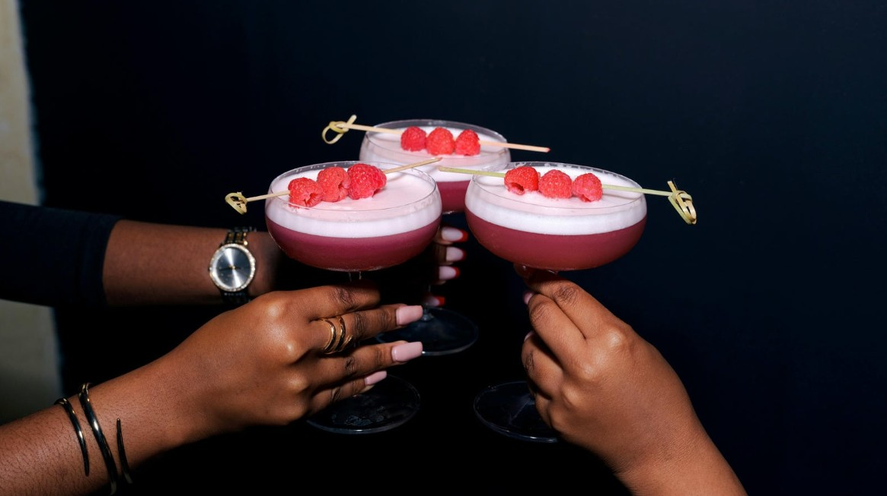
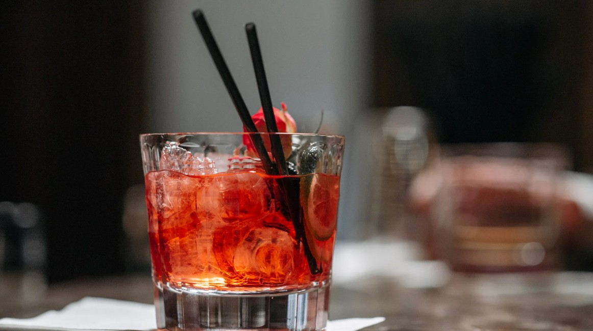
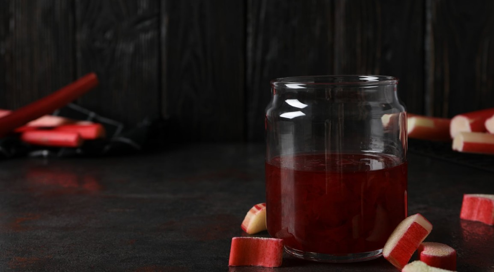

Light, crisp, and slightly tart, the Rhubarb Spritz is ideal for spring and summer gatherings. With its delicate sweetness and bubbly finish, it’s perfect for brunches, garden parties, or anyone who prefers a fresh and elegant aperitif.

Ingredients
Ice cubes 1 cl rhubarb syrup or sugar 4 cl De Kuyper sour rhubarb liquor 60 ml prosecco (could also be sparkling Rose) 30 ml soda water 2 cl fresh lime juice

Instructions
1. Fill a glass with ice 2. Pour rhubarb syrup or sugar, rhubarb liquor and lemon juice into the glass. 3. Add prosecco and soda water. 4. Stir gently and garnish with a slive of lime or fresh mint.

Rhubarb Syrup
Ingredients: 400 g chopped rhubarb, 200g sugar, 250 ml water 1. Combine all ingredients in a saucepan. 2. Simmer 10-15 minutes until rhubarb softens. 3. Strain out solids and let syrup cool. 4. Store in the fridge.